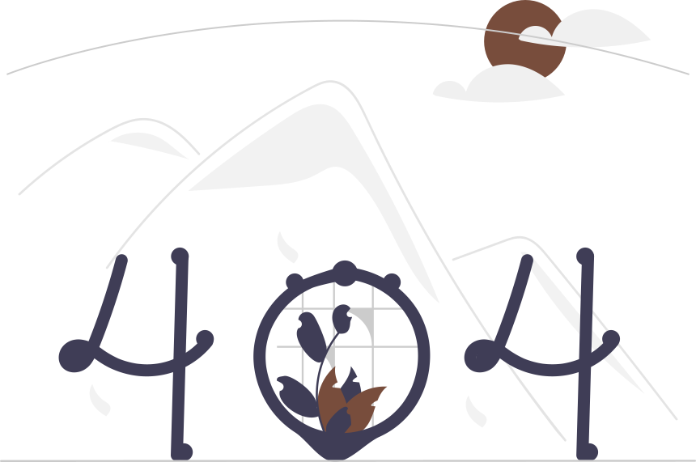

<div class="contenedor centrar-texto">
    <h1>Pagina no encontrado</h1>
    
    <div class="centrar">
        <button type="button" class="boton boton--primario" routerLink="/blog">Regresar</button>
    </div>
    
</div> 